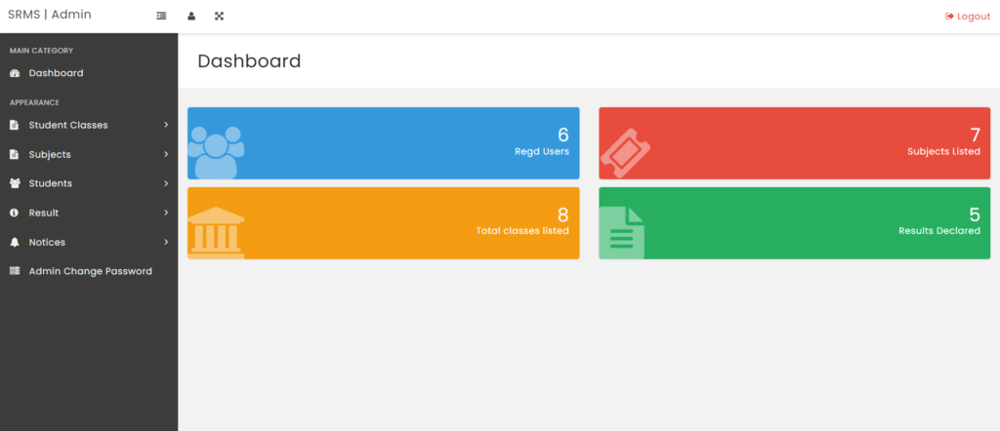
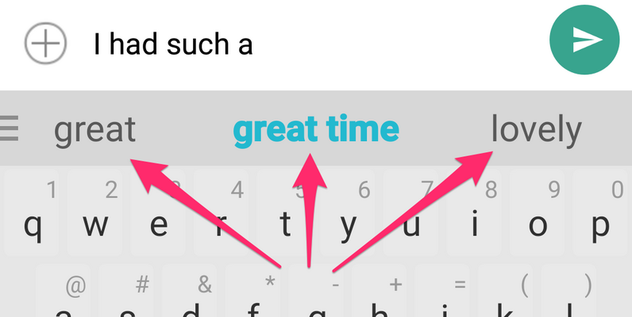

FrontEnd of Ecommerce Website
Developed FrontEnd of a food delivery application using the react with a focus on user-friendly React components. Implemented features for user authentication, shopping cart functionality
Tech Stack :React.js, Redux, CSS
Student Result Management System

Developed a streamlined Student Result Management System (SRMS) utilizing Python and a database to automate and enhance the management of student academic records and results. Facilitated efficient storage, retrieval, and manipulation of essential student information, fostering improved administrative processes.
Tech Stack : Tkinter, Pillow
Developed a streamlined Student Result Management System (SRMS) utilizing Python and a database to automate and enhance the management of student academic records and results. Facilitated efficient storage, retrieval, and manipulation of essential student information, fostering improved administrative processes.
Tech Stack : Tkinter, Pillow
Twitter Sentimental Analysis
Developed a hate speech detection system for tweets, distinguishing tweets with racist or sexist sentiment from others. Task involves precise classification of tweets into categories of negative sentiment or otherwise.
Tech Stack : NLTK , WordCloud , Matplotlib , Seaborn , Pandas , Numpy
Developed a hate speech detection system for tweets, distinguishing tweets with racist or sexist sentiment from others. Task involves precise classification of tweets into categories of negative sentiment or otherwise.
Tech Stack : NLTK , WordCloud , Matplotlib , Seaborn , Pandas , Numpy
Next Word Predictor

Designed a next-word predictor enhancing user experience in applications like text editors, messaging, search engines, and virtual assistants, by providing accurate and contextually relevant word suggestions for efficient typing.
Tech Stack : TensorFlow, Tokenizer, LSTM, pickle, Numpy
Designed a next-word predictor enhancing user experience in applications like text editors, messaging, search engines, and virtual assistants, by providing accurate and contextually relevant word suggestions for efficient typing.
Tech Stack : TensorFlow, Tokenizer, LSTM, pickle, Numpy